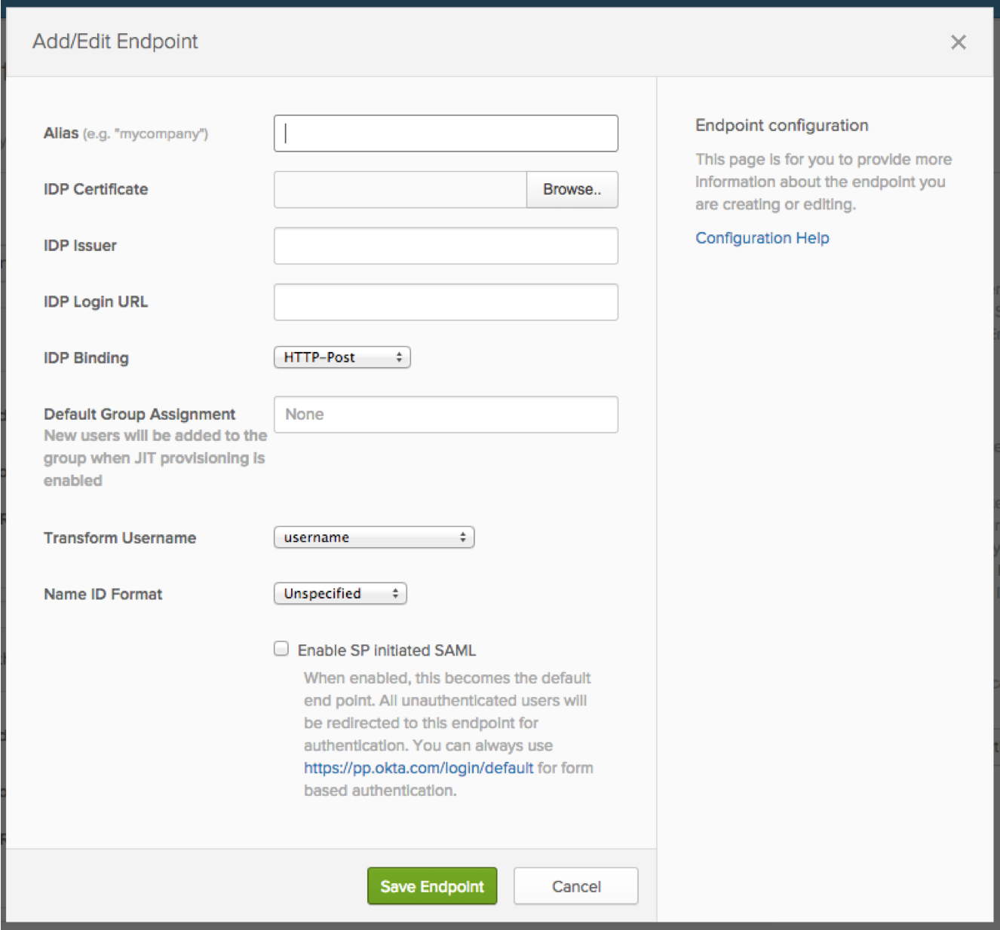
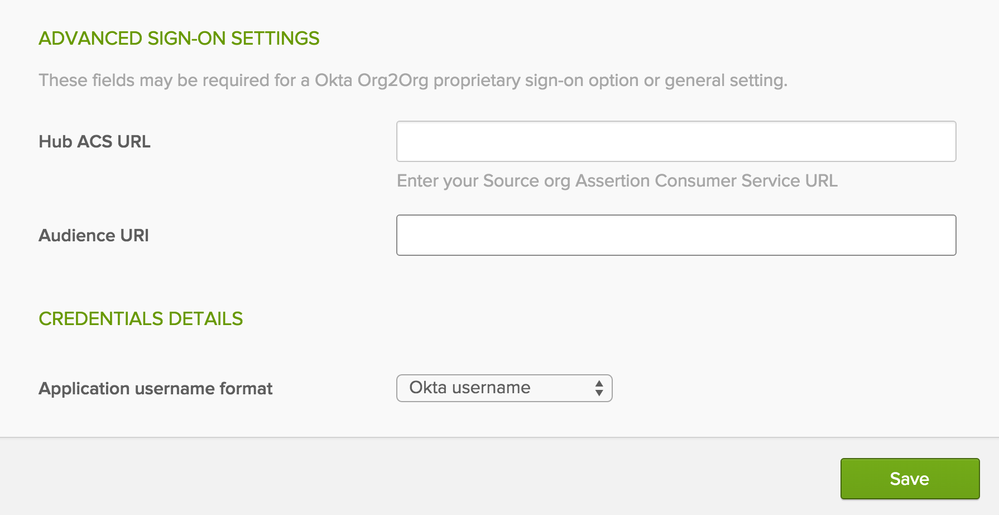

The Org2Org connector application is used to push/match users from one Okta organization to another. By configuring SAML for this application, users will be authenticated via SAML from one Okta organization to another. This application is used to master in the target (Hub) Okta organization, from the source (Spoke) Okta organization. The Org2Org application was specifically designed for a Hub/Spoke configuration.
Log into your Okta target organization (Hub) and select the Admin button.
Navigate to Security > Authentication, then select the Inbound SAML tab to open the interface.
Note: All inbound SAML configurations will be created using the spoke/source affiliates name.
Click Add Endpoint to create a new inbound SAML endpoint for the spoke/source affiliate.
Enter the following information:
Alias: Enter the spoke/source org name.
IDP Certificate: Download, then upload the X509 Certificate (below):
Sign into the Okta admin app to have this variable generated for you.
IDP Issuer: Copy and paste the following:
Sign into the Okta admin app to have this variable generated for you.
IDP Login URL: Copy and paste the following:
Sign in to the Okta Admin app to generate this variable.
Note: You will need this URL for Step 4 under "Configuring Application for Hub/Spoke"
IDP Bindings: Set to HTTP-Post.
Default Group Assignment: Leave this blank.
Transform Username: Set to UserName.
Name ID Format: Set to Unspecified.
Enable SP initiated SAML: Leave this unchecked.
Click Save Endpoint.
Once you save, you will be brought back on the main Inbound SAML page. Locate the Inbound SAML connection you just created. Copy the Assertion Consumer Service & paste it in the Hub ACS URL field in your source (spoke) Org2Org Application setup under the Sign on tab.
Next, copy the Audience URI and paste it in the Hub Audience URI field in your spoke (source) Org2Org Application setup under the Sign on tab.

The following instructions enable users in the Spoke org(s) to login to an application that's managed and provisioned by a single Hub org.
The following example will walk you through the exact steps to perform, using Google Apps as an example.
Note: Test to ensure the application works correctly in the Hub before configuring the Spoke.
In the Hub org, configure the application that you want to share in spoke org. For this example, we used Google Apps with SAML sign on mode.

Log into your source Okta org (spoke), and go to the Admin console. Click on Add Application, then add Bookmark App.
Type in an Application label (Hint: Name of the application you are creating - Google Apps in case of our example).
You will need 3 things to construct the URL, as follows:
Copy and paste the IDP Login URL to the URL field, from Step 4 above, under 'Configuring the Hub/Target Org (Inbound SAML)'
Add ?RelayState=
Followed by the Embedded link of the application in the hub. The Embedded link can be found under the General tab for Google Apps, or any other application you are configuring.
For Example:
http://sourceorg.okta.com/app/okta_org2org/exkidkmZXAoxbgwz20g3/sso/saml?RelayState=http://huborg.okta.com/home/google/0oaiqwYT8RpdS8I6D0g3/26
Done!
Now users can seamlessly log in to Google Apps from spoke org; Google Apps is configured in hub org.